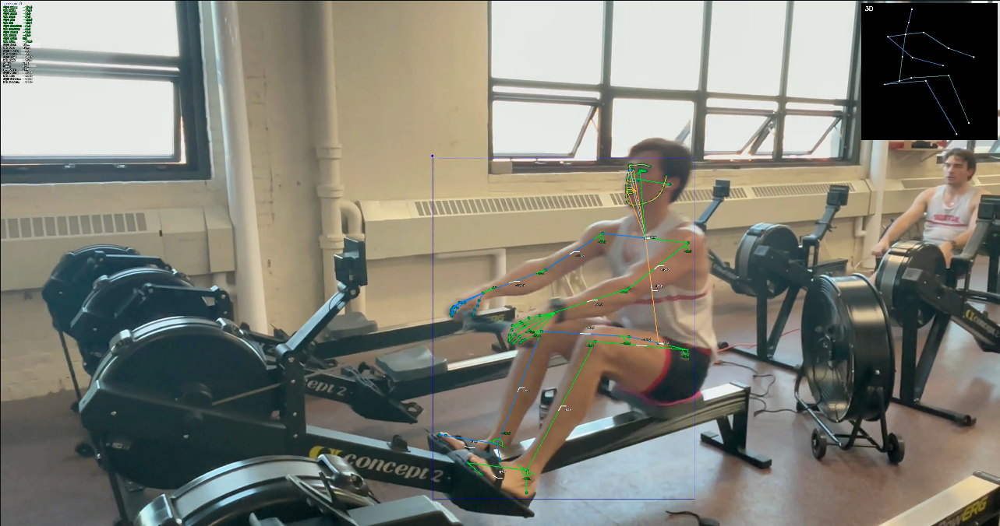
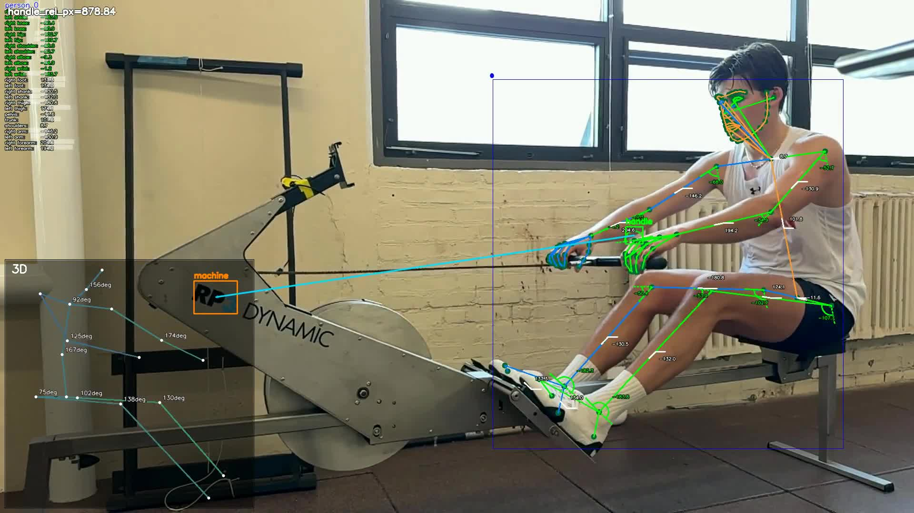
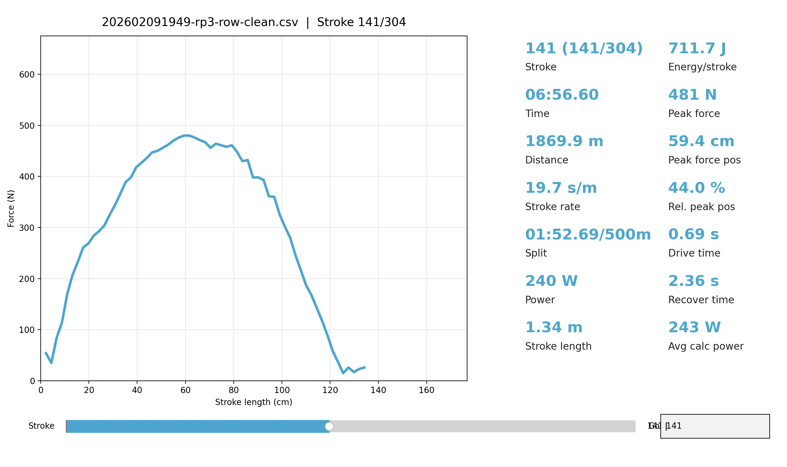
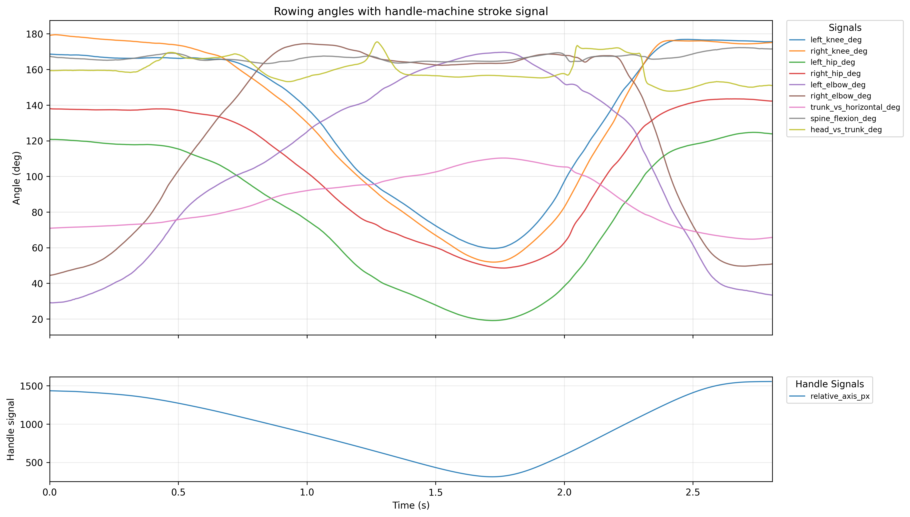
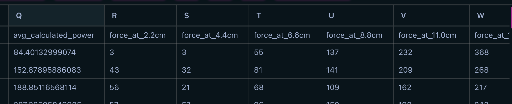
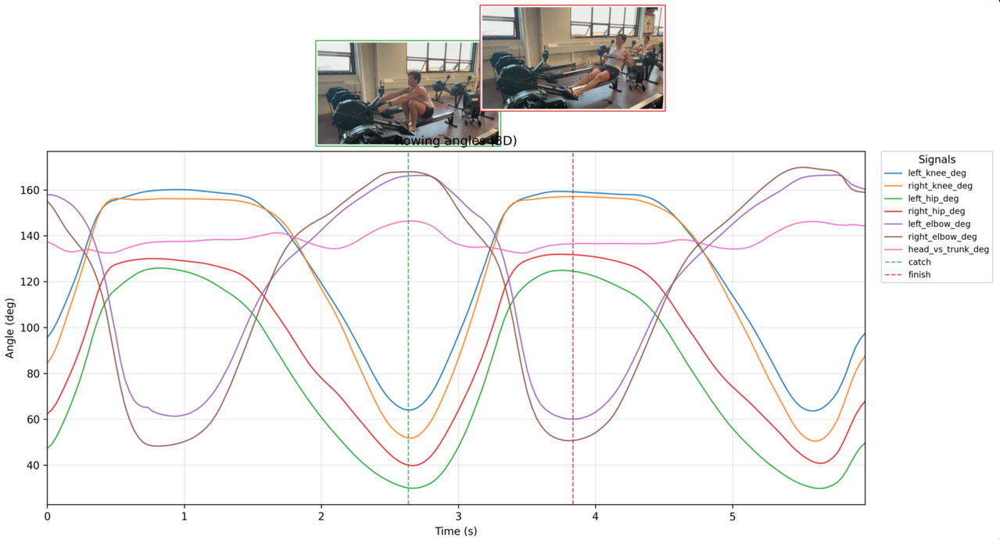

Predicting per-stroke force curves from video-only biomechanics. Two synchronized data streams converge during training; inference uses video alone. Click any stage to inspect data contracts.
Monocular rowing video → Sports2D / MotionBERT pose estimation
The sports2d_app pipeline processes monocular video through MotionBERT 3D lifting to extract H3.6M skeleton landmarks and compute joint kinematics frame-by-frame.

Sports2D pose overlay: smooth keypoint trajectories under self-occlusion

Handle proxy (hand midpoint) and machine reference tracking
angles_h36m.csv
frame_idx, time_s
left/right_knee_deg, hip_deg, elbow_deg
trunk_vs_horizontal_deg, spine_flexion_deg
head_vs_trunk_deg
stroke_signal.csv
frame_idx, time_s, handle_cx/cy_px
relative_axis_px, velocity_axis_px_s
stroke_idx, stroke_phase, is_drive
is_catch, is_finish
RP3 Force Data▶
Ergometer force exports → cleaned per-stroke force-at-distance bins
Raw RP3 exports are cleaned by inference_cli.py and expanded by expand_rp3_curve_data.py into spatially-sampled force bins at 2.2 cm intervals along the drive.

Per-stroke force curves reconstructed from cleaned RP3 data (2.2 cm distance bins)
*-clean.csv (expanded)
stroke_number, time, stroke_length
peak_force, peak_force_pos, rel_peak_force_pos
drive_time, recover_time
force_at_2.2cm, force_at_4.4cm, … force_at_Ncm
02Unilateral Standardization
Single-Side Biomechanics Mapping▶
Camera-near side becomes the canonical limb chain; sign conventions normalized across sessions
Each session declares an active_side (left or right). Source angle columns are mapped to canonical names and mirror-normalized so that feature semantics are consistent regardless of camera placement.
Canonical features
knee_active_deg ← left or right_knee_deg
hip_active_deg ← left or right_hip_deg
elbow_active_deg ← left or right_elbow_deg
trunk_deg, spine_deg (shared central)
03Stroke Segmentation
Video Stroke Segmentation▶
Catch/finish boundary detection → isolate drive portions per stroke
Uses stroke_signal.csv flags: drive starts at catch, ends at finish. Only the drive portion is supervised against RP3 force curves.

Joint angles, handle position, and stroke-phase markers from a single video
Per stroke
catch_frame, finish_frame
drive_frames[]: frame indices during drive
feature_curves[]: angle values at drive frames
RP3 Stroke Structure▶
Each RP3 row = one stroke; force sampled at 2.2 cm spatial bins along the drive
RP3 data is already per-stroke. Force values are sampled at fixed spatial intervals along the drive distance. The stroke length determines how many bins are valid.

Cleaned RP3 data: each sample at a fixed 2.2 cm step in stroke length
↳ Video + RP3 streams merge in normalized progress space
05Drive-Domain Alignment
Normalized Progress Grid s ∈ [0, 1]▶
All signals mapped to normalized drive progress — not wall-clock time, not pixels
The master domain is normalized drive progress s. This decouples the representation from frame rate, stroke speed, and physical distance.
RP3 side:s_force = d_k / stroke_length_cm
Video side:s_video from drive phase progression signal.
Video features are interpolated from s_video to s_force grid. No pixel-to-cm calibration is needed in this iteration.
Per stroke, aligned
s = [0.00, 0.02, 0.04, …, 1.00]
X(s): kinematic features at each s
Y(s): force at each s (training only)
06Feature Engineering
Angle Curves & Derivatives▶
Smoothed angles → dθ/ds via chain rule → optional d²θ/ds²
Smoothing: Fixed Savitzky-Golay kernel (small odd window, low polynomial order) applied to raw angle trajectories.
Chain rule:dθ/ds = (dθ/dt) / (ds/dt + ε)
Second derivatives included only if ablation shows clear gain. Strokes with ds/dt ≈ 0 or non-physiological spikes are rejected.

High-precision kinematic traces: the raw angle signals before derivative computation
Primary features
knee(s), hip(s), elbow(s), trunk(s)
d_knee/ds, d_hip/ds, d_elbow/ds, d_trunk/ds
[ablation] d²knee/ds², …
Coordination & Support▶
Phase lags, angle ratios, handle kinematics; stroke rate & drive ratio as context
Coordination: Phase timing lags (legs → swing, swing → arms) and angle ratio features at key progress points.
Support: Handle velocity/acceleration projected onto the drive axis.
Context: Stroke rate, drive ratio as scalar conditioning variables.
Coordination
leg_swing_lag, swing_arm_lag
leg_trunk_ratio(s), trunk_arm_ratio(s)
Support & context
handle_vel_axis(s), handle_acc_axis(s)
stroke_rate, drive_ratio
QCQuality Control & Failure Modes
Six per-stroke flags → hard/soft classification → aggregate quality score
QC Gate PipelineEach stroke passes through six independent checks producing flags and a composite score
Solid-bordered flags are hard drops; dashed-bordered flags are soft (informational only)
Progression Monotonicity▶
Detects when handle progress required silent repair via maximum.accumulate
The normalized progress signal s_video should be monotonically increasing during the drive. When the raw signal has backwards segments (tracking glitches), np.maximum.accumulate forces monotonicity —
but this distorts the progress axis and corrupts chain-rule derivatives.
Metric:progress_mono_violation_frac — fraction of drive frames where the raw value was below the running maximum.
Measures boundary sharpness via velocity contrast at catch and finish
Strokes with mushy, ambiguous catch/finish boundaries have misplaced drive windows, directly corrupting the label alignment between video features and RP3 force curves.
Velocity contrast: computed as the difference in mean |slope| across a short window on each side of the boundary, normalized by peak drive velocity. High = sharp reversal, low = gradual transition.
Three new fields on DriveEvent: catch_velocity_contrast, finish_velocity_contrast, drive_prominence.
Duration Plausibility▶
Simple physiological range check on drive and cycle durations
If a detected drive is 0.15 s or 3.5 s, it cannot be a real rowing stroke — the detection failed. This trivial range check catches outliers that the velocity-based detector missed.
Drive range: [0.4, 2.0] s. Cycle range: [1.5, 4.0] s.
Classification: hard drop — implausible durations mean the label alignment is corrupted.
Constants (inference_cli.py)
DRIVE_DURATION_MIN_S = 0.4
DRIVE_DURATION_MAX_S = 2.0
CYCLE_DURATION_MIN_S = 1.5
CYCLE_DURATION_MAX_S = 4.0
Aggregate Quality Score▶
Product of per-dimension sigmoid penalties → single [0, 1] confidence value
Rather than just binary flags, a continuous score enables soft weighting during training and gives end-users a trust signal during inference.
Aggregation: multiplicative — any single bad dimension drives the composite score toward zero (AND-logic, not averaging).
Five penalty dimensions each mapped through a smooth sigmoid from "good" (penalty ≈ 1) to "bad" (penalty ≈ 0):
_compute_quality_score()
nan_frac → good < 0.05, bad > 0.3
max_deriv_deg_s → good < 300, bad > 600
mono_violation_frac → good < 0.05, bad > 0.15
detection_confidence → good > 0.30, bad < 0.15
drive_duration_s → good [0.6, 1.5], bad outside [0.4, 2.0]
Force curve target encoding: raw curves → peak-normalized → PCA coefficients (20 components)
Stage 0 — Sanity Baselines▶
Force reproducibility floor + metadata-only regression — the bar biomechanics models must clear
Reproducibility floor: Quantify within-condition variability of force curves (same athlete, similar stroke rate/length bins). Median pairwise curve distance, coefficient of variation.
Metadata baseline: Regress force-curve PCA coefficients from scalar metadata only (stroke rate, length, drive time). Reconstruct predicted curves. Every biomechanics model must beat this.
Stage A: stroke-level scalar features → classical ML → PCA force-curve coefficients
Stage B — Sequence Models▶
Full progress-aligned kinematic sequences → TCN / Transformer encoder → full force curve
Temporal convolutional network or transformer encoder operating on the full progress-aligned feature sequences. Captures nonlinear stroke dynamics and cross-joint interactions.
Loss: Masked pointwise force loss. Shape regularizers or derivative losses added only if errors show pathological curve behaviour.
Stage progression: each stage must beat the previous on the same metrics
08Prediction & Output
Force Curve Prediction▶
Trained model applied to video-derived features → predicted per-stroke force curve + derived metrics
At inference, no RP3 input is used. The trained model takes video-derived kinematic feature sequences and predicts the complete force curve for each stroke.
Evaluation: consistent splits and metrics across all stages for fair comparison
Curve-Level Metrics▶
RMSE / MAE over force bins, per-stroke curve correlation
Standard regression metrics over all valid force bins in the hold-out set.
RMSE(F, F̂), MAE(F, F̂)
Pearson r per stroke
Rowing-Relevant Metrics▶
Peak force error, peak position error, impulse error, phase-specific errors
Metrics that matter to coaches and athletes — the downstream quantities that inform technique feedback.
peak_force_error (N)
peak_position_error (% drive)
impulse_error (N·s)
early / mid / late drive phase errors
Video pipeline
RP3 force data (training)
Shared processing
Inference output
Quality control gate
Click any card to toggle data contracts. Use the view switcher to focus on training or inference paths. For Stage 0–B training flows and evaluation metrics, see model training diagrams.